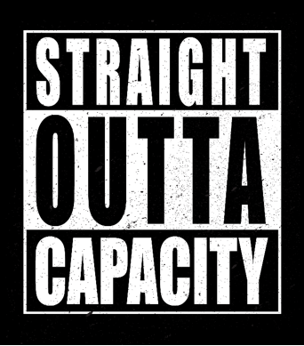
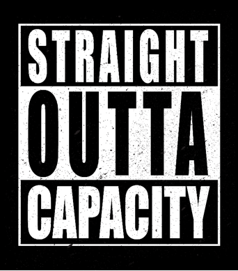

Work Experience
 

I have been with Liberty since 2010 and was my first corporate gig after graduating college. I started with an entry-level HR role and navigated my way into the tech space soon after in an L1-type support role. I was a liberal arts undergrad so I've had my work cut out for me transitioning to the IT side.
I have worked adjacent to development teams, in some capacity, for close to 10 years at Liberty Mutual. I’ve worked with a number of enterprise applications in various Systems Analyst and Configuration Engineer roles. Most recently, I’ve been embedded with developers as an Agile team member working as a Principal Configuration Engineer. My job responsibilities have required me to quickly learn and become proficient in supporting SaaS and custom- built/internal applications while providing me considerable exposure to tools and concepts used in the software development ecosystem.
Check out my profile on Linked for more info.